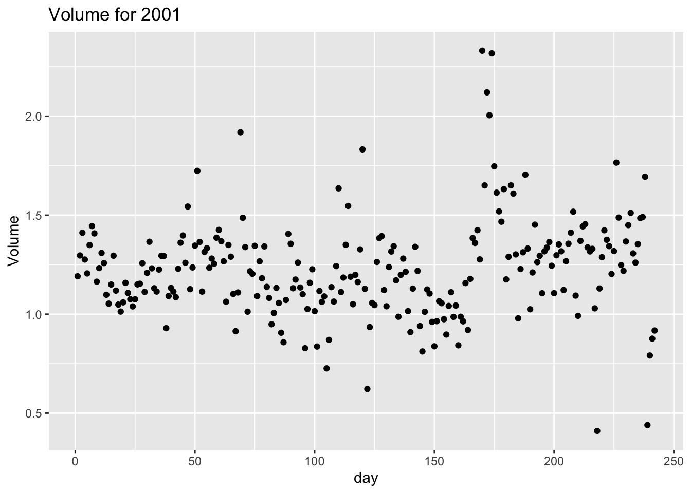

https://github.com/sta-363-s23/lab-01-hello-r.gitLab 01 - Hello R!
Due: Tuesday 2023-01-17 at 11:59pm
Introduction
R is the name of the programming language itself and RStudio is a convenient interface.
The main goal of this lab is to introduce you to R and RStudio, which we will be using throughout the course both to learn the statistical concepts discussed in the course and to analyze real data and come to informed conclusions.
As the labs progress, you are encouraged to explore beyond what the labs dictate; a willingness to experiment will make you a much better programmer. Before we get to that stage, however, you need to build some basic fluency in R. Today we begin with the fundamental building blocks of R and RStudio: the interface, reading in data, and basic commands.
Getting started
Each of your assignments will begin with the following steps.
- Find the lab instructions under the course syllabus on our website bit.ly/sta-363-s23
- Go to our RStudio Pro workspace and create a new project using my template.
For this assignment, go to RStudio Pro and click:
Step 1. File > New Project
Step 2. “Version Control”
Step 3. Git
Step 4. Copy the following into the “Repository URL”:
Packages
In this lab we will work with two packages: ISLR which is a package that accompanies your textbook and tidyverse which is a collection of packages for doing data analysis in a “tidy” way.
Install these packages by running the following in the console.
install.packages("tidyverse")
install.packages("ISLR")Now that the necessary packages are installed, you should be able to Render your document and see the results.
If you’d like to run your code in the Console as well you’ll also need to load the packages there. To do so, run the following in the console.
library(tidyverse)
library(ISLR)Note that the packages are also loaded with the same commands in your Quarto document.
The top portion of your Quarto file (between the three dashed lines) is called YAML. It stands for “YAML Ain’t Markup Language”. It is a human friendly data serialization standard for all programming languages. All you need to know is that this area is called the YAML (we will refer to it as such) and that it contains meta information about your document.
YAML:
Open the Quarto (qmd) file in your project, change the author name to your name, and render the document.
Data
The data frame we will be working with today is called Smarket and it’s in the ISLR package.
Remember: The Console is at the bottom of your RStudio workspace. Things you type in the Console will not be in your final report. This is a good place to peek at data (using the glimpse() funtion for example) and look at help files with the ?.
To find out more about the dataset, type the following in your Console: ?Smarket. A question mark before the name of an object will always bring up its help file. This command must be ran in the Console. You can also use the glimpse() function to learn more about the dataset. Run glimpse(Smarket) in the Console.
This dataset contains daily percentage returns for the S&P 500 stock index between 2001 and 2005.
- Based on the help function, how many rows (n) and how many columns (p) does the
Smarketfile have? What are the variables included in the data frame? Add your responses to your lab report.
Add a variable
- Add a variable called
dayto theSmarketdata. This variable will range from 1 ton()within eachYearwherenis the number of observations in the given year.
Below is the code you will need to complete this exercise. Basically, the answer is already given, but you need to include relevant bits in your qmd document and successfully knit it and view the results.
Start with the Smarket dataset and pipe it into the group_by function to group by Year. Then pipe this into the mutate function to create a new variable called day. Overwrite the Smarket data frame with this new data frame that includes the added variable.
Run this code in your Console and then run Smarket to see the new data frame.
Smarket <- Smarket |>
group_by(Year) |>
mutate(day = 1:n())There is a lot going on here, so let’s slow down and unpack it a bit.
First, the pipe operator: |>, takes what comes before it and sends it as the first argument to what comes after it. So here, we’re saying take the Smarket data frame and group_by Year. Then take that output and mutate it to add a column called day that ranges from 1:n() for each year.
Second, the assignment operator: <-, assigns the name Smarket to the updated data frame.
Data visualization
- Plot
Volumeversusdayfor theYear2001. Then calculate the averageVolumein 2001.
Below is the code you will need to complete this exercise. Basically, the answer is already given, but you need to include relevant bits in your qmd document and successfully knit it and view the results. Be sure to write a full sentence with the answer to the question (i.e. The average volume in 2001 is…), do not only output the R code.
Start with the Smarket dataset and pipe it into the filter function to filter for observations where the Year column is equal to 2001. Store the resulting filtered data frame as a new data frame called smarket_2001.
Notice we used == to check whether the year was equal to 2001. In your Console run ?Comparison to see other relational operators that R uses.
smarket_2001 <- Smarket |>
filter(Year == 2001)Again, the pipe operator: |>, takes what comes before it and sends it as the first argument to what comes after it. So here, we’re saying filter the Smarket data frame for observations where the column Year is equal to 2001.
Then the assignment operator: <-, assigns the name smarket_2001 to the filtered data frame.
Now let’s create a visualization We will use the ggplot function for this. Its first argument is the data you’re visualizing. Next we define the aesthetic mappings. In other words, the columns of the data that get mapped to certain aesthetic features of the plot, e.g. the x axis will represent the variable called day and the y axis will represent the variable called Volume. Then, we add another layer to this plot where we define which geometric shapes we want to use to represent each observation in the data. In this case we want these to be points, hence geom_point.
ggplot(data = smarket_2001, mapping = aes(x = day, y = Volume)) +
geom_point() +
labs(title = "Volume for 2001")
If this seems like a lot, it is. And you will learn about the philosophy of building data visualizations in layer in detail next week. For now, follow along with the code that is provided.
Finally, we use the summarize() function to take the mean() of the Volume variable. We have named this new variable avg_volume.
smarket_2001 |>
summarize(avg_volume = mean(Volume))Plot
Volumevs.dayfor the the year 2002. Calculate the averageVolumein 2002. You can (and should) reuse code we introduced above, just replace the year with the desired year. How does this plot compare to 2001?Plot
Volumevs.dayfor the the year 2005. You can (and should) reuse code we introduced above, just replace the year with the desired year. How does this plot compare to the 2001 and 2002?Finally, let’s look at all the years at once. In order to create this plot we will make use of faceting. How do the plots compare to each other across years? How does the average
Volumecompare across years?
ggplot(Smarket, aes(x = day, y = Volume, color = Year)) +
geom_point() +
facet_wrap(~ Year, ncol = 2) +
theme(legend.position = "none")Facet by the Year variable, placing the plots in a 2 column grid, and don’t add a legend.
And we can use the group_by() function to generate the average Volume by Year.
Smarket |>
group_by(Year) |>
summarise(avg_volume = mean(Volume))
Lab adapted from datasciencebox.org by Dr. Lucy D’Agostino McGowan